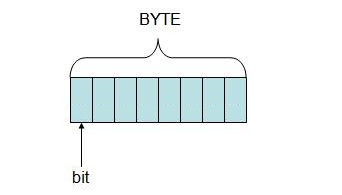
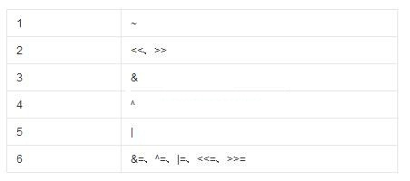
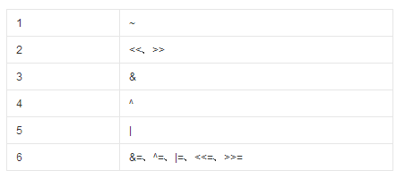

12 位运算
大家知道，程序中的数据在内存中，都是以二进制的形式存在的。所以，内存中的数据一般都是0和1组成的序列。所谓位运算就是直接对整数在内存中补码的二进制位进行操作。直接对二进制位进行操作，使得位运算比普通的运算操作效率要高。
关于位运算的操作分为：与(and)，或(or)，取反(not)，异或(xor)，左移(shl)，右移(shr/sar)等几种运算，它们共同构成了C语言中的位运算操作。
12.1 二进制与位运算
程序中的数据在内存中，都是以二进制的形式存在的。所以，内存中的数据一般都是0和1组成的序列。所谓位运算就是直接对整数在内存中的二进制位进行操作。直接对二进制位进行操作，使得位运算比普通的运算操作效率要高。
如下图所示，数据是用字节表示的，1个字节占8位。位运算就是直接对字节中的位进行运算。关于位运算的操作分为：与(and)，或(or)，取反(not)，异或(xor)，左移(shl)，右移(shr/sar)等几种运算，它们共同构成了C语言中的位运算操作。
学习位运算的基础是掌握整数的补码存储与二进制表示方法，以及如何将一个十进制整数转化为二进制。详情请见第二章2.6/2.7节。
12.2 与（&）运算
与运算的操作符为&。2个数进行与运算时，就是将这2个数的二进制进行与操作，只有当2个数对应的位都为1，该位运算结果为1，否则运算结果为0。
即1&1 = 1，1&0 = 0。那么如何计算两个整数的与运算呢？比如计算15&10，首先15的二进制为：1111，10的二进制为1010，所以15&10为：
所以15&10=10。
int main(void)
{
int a = 15;
int b = 10;
int c = 15&10;
printf(“a&b=%d\n”, c);
return 0;
}
12.3 与（&）运算的应用
与运算的性质：任何数&1都是它本身，&0是0。因此我们可以通过与运算来获取一个整数的某个部份的值，比如：
获取一个整数的后3位：
int x=100;
x&7即为x的后三位。因为7的二进制码为0111。所以，任何一个数与7进行与运算，那么其它位都会被置零。只有后三位得到保留。
我们也可以使用与运算与取反和移位运算相结合，将整数的某位置零。比如：
x&(~(1<<n))即可将x第n位置为零。
#define CLEARFLAG(a,n) ((a) &= ~(1<<(n)))//把整数a中第n位置为0
此外，我们还可以用来判断一个整数中某位是否为1（通常是某个标志信息），比如：
x&(1<<n);
上面的语句可以用来判断x中第n位是否为1。有时候一个整数通常用某1位或几位置1来表示一个信息，另几位表示另外的信息，这个时候用与运算就可以判断该位是否有该信息。
#define FLAGON(a,n) ((a)&(1<<(n)))//判断整数a中第n位是否为1
12.4 或（|）运算
或运算的操作符为|。2个数进行或运算时，就是将这2个数的二进制进行或操作，只要2个数对应的位有一个为1，该位运算结果为1，否则运算结果为0。
即1|1 = 1，1|0 = 1， 0|0 = 0。那么如何计算两个整数的或运算呢？比如计算15|10，首先15的二进制为：1111，10的二进制为1010，所以15|10为：
所以15|10=15。
int main(void)
{
int a = 15;
int b = 10;
int c = 15|10;
printf(“a|b=%d\n”, c);
return 0;
}
12.5 或（|）运算的应用
或运算性质：任何一个数与1进行或运算为1，与0或运算为本身。可以利用此性质，将某个数的某位置1。
#define SETFLAG(a,n) ((a) |= (1<<(n)))//把整数a中的第n位置为1
12.6 取反（~）运算
取反运算的操作符为~，为单目运算符。取反运算符顾名思义，就是将一个整数中位为1的变成0，位为0的变成1。

即~1 = 0，~0 = 1。那么如何计算1个整数的取反运算呢？比如计算~10，首先10的二进制为：1010，~10为：
所以~10=5。
int main(void)
{
int a = 10;
int b = ~10;
printf(“~10=%d\n”, b);
return 0;
}
12.7 取反（~）运算的应用
取反运算同与运算结合，可以将一个整数的某位置0，比如：
#define CLEARFLAG(a,n) ((a) &= ~(1<<(n)))//把整数a中第n位置为0
12.8 异或（^）运算
异或运算的操作符为^。2个数进行异或运算时，就是将这2个数的二进制进行异或操作，只要2个数对应的位相同，该位运算结果为0，否则运算结果为1。
即1^1 = 0，1^0 = 1， 0^0 = 0。那么如何计算两个整数的异或运算呢？比如计算15^10，首先15的二进制为：1111，10的二进制为1010，所以15^10为：
所以15^10=5。
int main(void)
{
int a = 15;
int b = 10;
int c = 15^10;
printf(“a^b=%d\n”, c);
return 0;
}
12.9 异或（^）运算的应用
异或运算的性质：
a^a==0 a^0==a
即任何一个数与自身异或为0，与零异或为自身。
1 置零
利用这个性质，可以用于2个数的交换，置零等。
比如，我们在汇编语言里，经常看到这样的汇编语句：
xor eax,eax
这条汇编语句，利用异或性质，将eax置零。
2 交换2个数
异或另一个出名的应用是两个数的交换：
<
p>#define SWAP(a,b) \
do{\
a=a^b;\
b=a^b;\
a=a^b;\
}while(0)</p
证明：
假设：a和b的初始值：a=a0,b=b0;
那么：
第一句：a=a^b即a为a0^b0
第二句：b=a^b即(a0^b0)^b0=》a0^(b0^b0)=》a0^0=》a0
第三句：a=a^b即a0^b0^a0=》a0^a0^b0=》0^b0=》b0
因此，通过上面的推导，实现了a与b值的交换。
3 单指针域构造双向链表
此外，异或还可以用在链表中，我们知道，通常的双向链表，需要在链表结点中设置2个指针，指向该结点的前驱和后继结点，但如果使用异或，则可以用单个指针域来表示双向链表：
有任意3个相邻结点：PL， P， PR
那么P->next = PL^PR
对于头结点来说：P没有左边的结点，所以左结点为NULL
所以Head->next = NULL^PR
对于尾结点来说：
尾结点没有右边的结点，所以PR为NULL
Tail->next = PL^NULL
那么在遍历的时候：
按照上述规则生成链表之后，遍历方法如下：
从左往右遍历链表：
pl=NULL;
p=Head;
while(p!=Tail)
{
pr=pl^(p->next);
pl=p;
p=pr;
}
从右往左遍历链表：
pr=NULL;
p=Tail;
while(p!=Head)
{
pl=pr^(p->next);
pr=p;
p=pl;
}
12.10左移（<<）运算
左移运算符为<<。将一个数a向左移动n位记为：a<<n。比如将12向左移动2位如何计算呢？12的二进制为00001100，那么左移动2位为：00110000。无论左移还是右移，都需要用0或者1去填充移动之后空位。在左移的过程中，右边一律用0去填充。左移就没有右移那样分为逻辑右移和算术右移。
比如，将10左移2位，由于10的二进制为：00001010，那么左移2位，右边用零填充的结果为：00101000。
将一个数左移N位相当于将一个数乘以2^N，而将一个数右移N位相当于将这个数除以2^N。
int main(void)
{
int a = 10;
int b = a<<2;
printf(“b=%d\n”, b);
return 0;
}
上述位运算符的优先级列表如下：
实际上，在讲解运算符的第5章就已经将各个运算符的优先级列了出来。因此，牢牢记住整个运算符的优先级，就没有问题。
12.11 右移（>>）运算
右移运算符为>>。将一个数a向右移动n位记为：a>>n。比如将12向右移动2位如何计算呢？12的二进制为00001100，那么右移动2位为：00000011，即3。
即12>>2为3。
右移动运算分为两种右移，一种为逻辑右移，在移动过程中，左边位用0填充。一种为算术右移，在移动过程中，左边用符号位来填充。
比如对于有符号数：10000011，对于逻辑右移，向右移动3位，那么左边用0填充，变成了：00010000。而对于算术右移，向右移动3位，那么左边用1（1为符号位）填充，变成了11110000。而对于01000011，算术右移3位，那么左边用0（0为符号位）填充，变成了00001000。
在C语言中，右移运算符为算术右移运算符，即左边用符号位来填充。
int main(void)
{
int a = -3;
int b = 10;
int c = a >> 2;
int d = b >>1;
printf(“a>>2=%d, b>>1=%d\n”, c, d);
return 0;
}
12.12 位运算优先级
位运算符的优先级如下图，位置靠前的优先级高于位置靠后的优先级。
12.13 常见位运算
1．任何一个数和0异或是它的本身：
a^0=a
a^a=0
void swap(int *a, int *b)
{
*a = *a ^ *b;
*b = *a ^ *b;
*a = *a ^ *b;
}
1） 将第n位置位或清零：
#define BITN (1<<n) 置位：a |= BITN; 清零：a &= ~BITN
2） 清除整数a最右边的1。
方法：a & (a – 1)
问题：如何判断判断整数x的二进制中含有多少个1？
分析：此题是微软公司的一道笔试题。下面用&运算来解决此题。
代码如下：
int func(int x )
{
int countx = 0;
while ( x )
{
countx ++;
x = x&(x-1);
}
return countx;
}
| 功能 | 示例 | 位运算 |
| 去掉最后一位 | (101101->10110) | x >> 1 |
| 在最后加一个0 | (101101->1011010) | x << 1 |
| 在最后加一个1 | (101101->1011011) | (x << 1) + 1 |
| 把最后一位变成1 | (101100->101101) | x | 1 |
| 把最后一位变成0 | (101101->101100) | (x | 1) - 1 |
| 最后一位取反 | (101101->101100) | x ^ 1 |
| 把右数第k位变成1 | (101001->101101,k=3) | x | (1 << (k - 1)) |
| 把右数第k位变成0 | (101101->101001,k=3) | x & ~ (1 << (k - 1)) |
| 右数第k位取反 | (101001->101101,k=3) | x ^ (1 << (k - 1)) |
| 取末三位 | (1101101->101) | x & 7 |
| 取末k位 | (1101101->1101,k=5) | x & ((1 << k) - 1) |
| 取右数第k位 | (1101101->1,k=4) | x >> (k - 1) & 1 |
| 把末k位变成1 | (101001->101111,k=4) | x | ((1 << k )- 1) |
| 末k位取反 | (101001->100110,k=4) | x ^ ((1 << k) - 1) |
| 去掉整数最右边的1 | (100101111->100101110) | x & (x – 1) |
| 把右边连续的1变成0 | (100101111->100100000) | x & (x + 1) |
| 把右起第一个0变成1 | (100101111->100111111) | x | (x + 1) |
| 把右边连续的0变成1 | (11011000->11011111) | x | (x - 1) |
| 去掉右起第一个1的左边 | (100101000->1000) | x & (x ^ (x - 1)) |
| 取右边连续的1 | (100101111->1111) | (x ^ (x + 1)) >> 1 |
12.14 位运算在软件工程中的运用
在WDK中创建文件的IRP中，有一个Options整数，它的高8位记录了对文件的修改标记。因此可以使用下面的位运算来获取这8位的值：
ulDisposition = (lpIrpStack->Parameters.Create.Options >> 24) & 0xFF;
上面的语句中，先将该整数右移24位，再与0xFF做与运算，即可获得该8位的值。
此外，在实际应用中，会经常使用下面的宏定义来为一个整数设置，清除或者判断某些标志:
#define SETFLAG(a,n) ((a) |= (1<<(n)))//把整数a中的第n位置为1 #define CLEARFLAG(a,n) ((a) &= ~(1<<(n)))//把整数a中第n位置为0 #define FLAGON(a,n) ((a)&(1<<(n)))//判断整数a中第n位是否为1<
本页共313段，7282个字符，12739 Byte(字节)